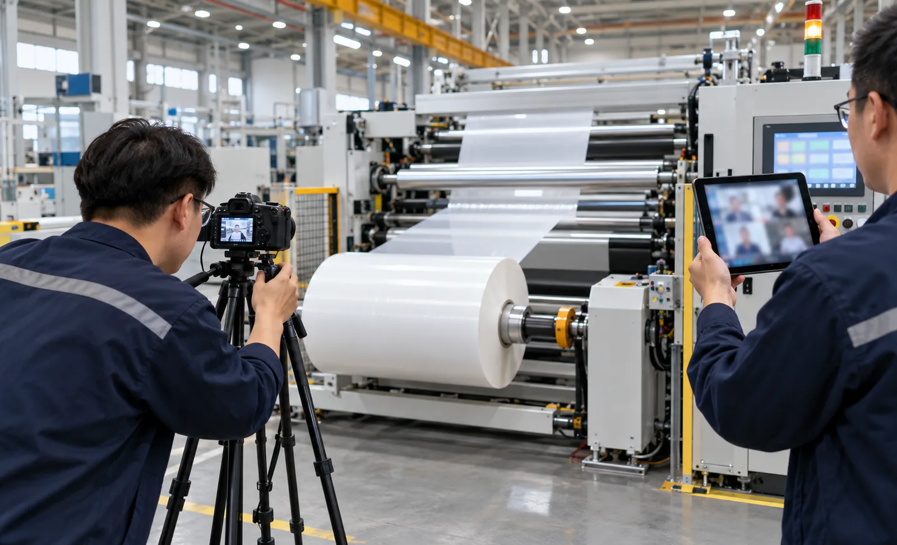
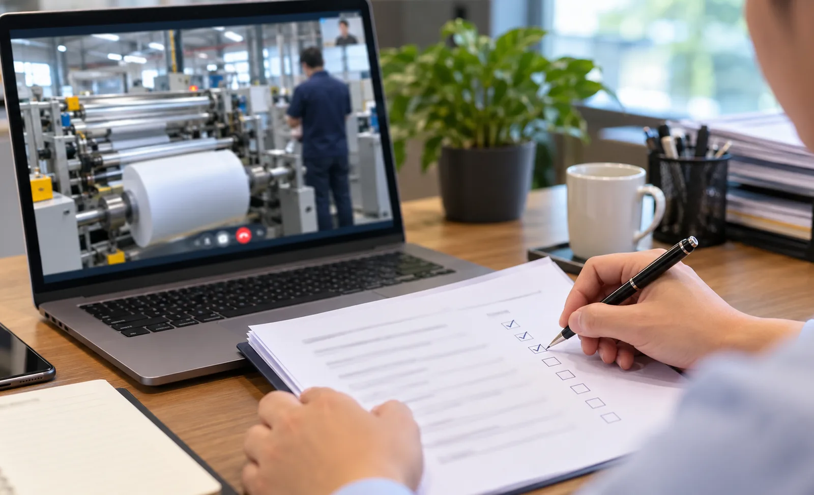

Published September 26, 2026 | By HDPTH Technical Editorial Team

Travelling to the factory for acceptance used to be automatic. Today many buyers accept machines they have never stood beside, and most of the time it works — but only for those who treat the remote format as a different discipline rather than a cheaper version of the same visit. The risks of a badly run virtual FAT are not the obvious ones. Missing a wiring fault matters less than discovering that nobody can agree, months later, on what was actually demonstrated.
What a screen can verify — and what it cannot
Start by sorting the checklist. Everything expressible as live action, measurement or data can be verified remotely: sustained speed runs on your material, slit width checked lane by lane with the caliper held to the lens, roll hardness profiles, start-up scrap counts, safety interlock trips demonstrated on camera, recipe changes navigated on the shared HMI, and documentation reviewed live. What the format carries poorly is tactile and holistic: paint and weld quality, routing and dress of cabling, accessibility of greasing points and filters, the sound of a loaded drivetrain. These items are exactly why the standard FAT checklist marks each line with its verification method — remote buyers should insist on the same column, filled in advance.
| Checklist item | Remote verification method | Residual risk |
|---|---|---|
| Sustained speed on your material | Live run + trend data export | Low |
| Slit width per lane | Measured instrument on camera | Low |
| Roll hardness / winding quality | Live unwinding of finished rolls | Low |
| Safety interlocks and guarding | Live trip demonstration per circuit | Medium — wiring detail unseen |
| Maintenance accessibility | Difficult — space is hard to show | High — needs on-site eyes |
The set-up to demand from the supplier
The test is only as strong as its weakest camera. Require two channels as a minimum: a roaming handheld camera the buyer can direct by voice — "follow the operator, now show the unwind stand from the other side" — and a fixed view of the operator panel so HMI actions are never cut away. Add real-time screen sharing of the HMI and trend displays, calibrated instruments used within camera view, live export of trend files during the run, and bandwidth tested before the test date. The buyer-side discipline matters equally: a named witness with authority to pause the run, the checklist open, and notes timestamped against the recording. Virtual acceptance fails through passivity far more often than through technology.

Evidence: recording as the contract
In an on-site FAT the shared memory of people in a room substitutes for documentation. Remotely, that shared memory does not exist, so the recording carries the weight. Require the complete, unedited recording of every session, the raw data files behind every claimed number, calibration certificates for the instruments used, and the signed checklist with its open-point list. Agree in advance that no checklist item is verified from a pre-recorded video unless explicitly negotiated — edited highlight reels have ended more acceptances than any technical fault. What was proven at the factory is then the baseline for the methods in the performance guarantee, and retested under your operators during commissioning.
When hybrid beats fully remote
The honest model for most substantial machines is hybrid. Run the full performance and functional programme remotely — it plays to the format's strengths. Then reserve a short on-site visit, or a compressed verification during commissioning, for the camera-resistant items: mechanical fit, wiring dress, safety circuit detail and operator training. Some buyers add a trusted third-party inspector for a day at the factory, at a small fraction of a full trip's cost. What matters is that the split is written into the contract, item by item, so no checklist line falls silently between the video and the visit. Where the machine is small, standard and repeat-purchased, fully remote with a photographic survey may be a defensible choice — but it should be chosen, not defaulted into.
Remote FAT checklist
- Every checklist item tagged: verified live, by data export, or requiring on-site inspection.
- Two video channels specified; buyer can direct the roaming camera at any time.
- HMI and trend displays screen-shared in real time; data files exported during the run.
- Instruments calibrated, certificates shared, measurements taken within camera view.
- Named buyer witness with authority to pause; agenda with named runs and slots.
- Complete unedited recordings and raw data retained as contract annexes.
Accepting a machine without travelling?
Send HDPTH your product and material profile. We will propose a remote FAT protocol with tagged verification methods, live-streamed runs under your control, and complete data and recording handover — with on-site or commissioning verification for the items a camera cannot carry.
Submit Your Project InquiryQuestions to put to every vendor
- Which video and screen-sharing set-up will you provide, and how is the roaming camera directed?
- Which checklist items do you propose to verify by data rather than live demonstration?
- Will the complete recording be handed over unedited, and who owns it?
- Which items do you yourselves recommend keeping for on-site verification, and why?
Frequently asked questions
What can a remote FAT verify as reliably as an on-site visit?
Everything that can be captured by live video, shared data and documents: sustained speed runs on your material, width measurements with the instrument held to the camera, roll hardness profiles, start-up scrap counts, safety interlock demonstrations, HMI navigation and recipe changes, and paperwork review. What a camera cannot verify reliably is fit and finish, accessibility clearances for maintenance, how the machine sounds under load, and the quality of welds and wiring routes — those items need either an on-site visit or trusted inspection.
What infrastructure must the supplier provide for a virtual FAT?
At least two stable video channels — one roaming handheld camera controlled by the buyer on request, one fixed view of the operator panel — plus screen sharing of the HMI and trend displays in real time, calibrated instruments within camera view, a live data export of trend files during the run, and adequate bandwidth throughout. A single phone propped on a workbench is not a factory acceptance test; the set-up must give the buyer control over what is shown and when.
What evidence should the buyer retain after a virtual FAT?
The complete unedited recording of every live session, the raw trend and measurement data files, calibration certificates for the instruments used, photographs of sample rolls and slit lanes, and the signed checklist with open-point list. The recording matters most: it is the only protection against later disagreement about what was actually demonstrated, and it should be treated as contract evidence, not as an internal note.
When is a hybrid acceptance the better model?
When the machine is large or complex, when safety and wiring quality carry real weight, or when the production guarantee applies to material that behaves differently at the factory than in your plant. A common split runs the full performance programme remotely, then reserves a one or two day on-site visit for mechanical fit, safety circuits and operator training before shipment, or combines remote FAT with a compressed on-site verification during commissioning. Define the split in the contract so nothing falls between the two.